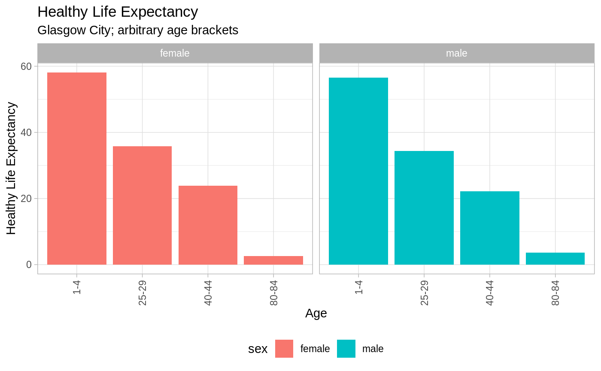

The following packages makes use of the SPARQL1 language queries in order to query the data available through the statistics.gov.scot portal2. In effect, the app works as a wrapper for SPARQL queries providing a suite of common functionalities relevant to how the Scottish public data is being utilises.
The proposed workflow looks at obtaining life expectancy data for the Glasgow City. The workflow focuses on the following steps:
The package comes with an embedded data sets containing list of data and geographies available through the statistics.gov.scot endpoint. To see the list of available data sets refer to the data("available_data_sets") objects. The available_data_sets contains subject column that can be used to identify relevant data, as shown below.
data("available_data_sets")
subset.data.frame(x = available_data_sets,
subset = grepl(pattern = "expectancy", x = subject))| dataset_value | subject | |
|---|---|---|
| 119 | http://statistics.gov.scot/data/healthy-life-expectancy | healthy-life-expectancy |
| 120 | http://statistics.gov.scot/data/healthy-life-expectancy-deprived | healthy-life-expectancy-deprived |
| 155 | http://statistics.gov.scot/data/life-expectancy | life-expectancy |
The object data("standard_geography_code_register") is provided to facilitate verifying existence of the geography we are interested in. Similarly, as in the previous step we can use grep() to verify existence of that object in the provided data frame. For that purpose we can check the value column for existence of the desired string.
data("standard_geography_code_register")
subset.data.frame(x = standard_geography_code_register,
subset = grepl(pattern = "^Glasgow City$", x = value))Most of the data sourcing work is done through get_geography_data() function. Following from the example below the function can be applied as follows
The pre-processing of the results already took place and was achieved by passing pre_process_results = TRUE to get_geography_data() function. The results can be also pre-processed independently by calling pre_process_data() on a returned object. The provided object is lends itself well for analysis.
suppressPackageStartupMessages(library(tidyverse))
dta_Glasgow_Life_Expectancy %>%
rename("exp" = count) %>%
filter(age %in% c("1-4", "25-29", "40-44", "80-84")) %>%
ggplot(aes(y = exp, x = age, fill = sex)) +
labs(x = "Age",
y = "Healthy Life Expectancy",
title = "Healthy Life Expectancy",
subtitle = "Glasgow City; arbitrary age brackets") +
geom_bar(stat = "identity") +
facet_wrap(facets = . ~ sex) +
theme_light() +
theme(axis.text.x = element_text(angle = 90, hjust = 1, vjust = 0.5),
legend.position = "bottom")
For the sake of efficiency the objects data("available_data_sets") and data("standard_geography_code_register") are provided in the package. Those objects are not updated too frequently and providing them as statics data sets makes sense from the efficiency perspective. It is however possible to source live the mentioned objects. This is discussed in vignette("support-functions").
Detailed information on the SPARQL is available through W3C pages.↩
The implementation follows part of the Open Data Strategy implemented by the Scottish Government that can be accessed through the Scottish Government pages.↩